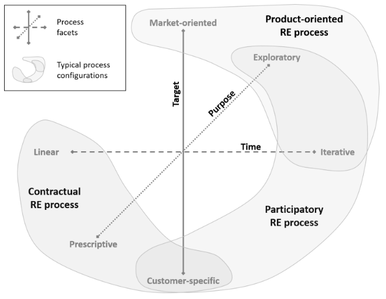

VISÃO DO PRODUTO E PROJETO
Histórico de Revisão
| Data | Versão | Descrição | Autor |
|---|---|---|---|
| 15/04/2023 | 0.1 | Criação do documento | Ana Luiza , Renato, Tales e Weslley Barros |
| 16/04/2023 | 0.2 | Adiciona as seções 1.3 e 2.1 | Ana Luiza , Renato, Luis, Tales e Weslley Barros |
| 26/04/2023 | 0.3 | Adiciona as seções 3.1 e 3.2 | Renato |
| 26/04/2023 | 0.4 | Adiciona a seções 2.2 | Weslley Barros |
| 27/04/2023 | 0.4.1 | Adiciona a seções 2.2 | Weslley Barros, Renato |
| 24/05/2023 | 0.5 | Refatorando Visão | Ana Luiza, Tales |
| 19/06/2023 | 0.6 | Refatorando visão | Ana Luiza |
| 19/06/2023 | 0.6.1 | Refatorando gerenciamento de riscos | Weslley Barros |
| 19/06/2023 | 0.6.2 | Refatorando visão | Ana Luiza |
| 20/06/2023 | 0.7 | Alteração Planejamento das Fases e/ou Iterações do Projeto | Ana Luiza |
| 20/06/2023 | 0.7.1 | Alteração Nas Atividades das sprints | Renato |
| 20/07/2023 | 0.8 | Atualização do Visão | Ana Luiza |
1 VISÃO GERAL DO PRODUTO
1.1 Declaração de Posição do Produto
O SOSóptica é um software para aplicação de gerenciamento de dados do cliente, produtos e venda que visa agregar as informações a respeito da Óptica Opção. A idéia é facilitar a acessibilidade dos dados da óptica, apesar dos dados já estarem disponíveis em uma planilha excel, acaba por ser uma tarefa de baixa praticidade, consultar inúmeras planilhas. Logo, ao invés de acessar várias planilhas excel, o SOSóptica, propõe uma solução mais eficiente e estimulante para o dono da óptica.
| Para | Optica Opção |
| Quem | Necessita de mais eficiência no gerenciamento de clientes |
| O SOSóptica | É um software voltado para gerenciar os clientes da Óptica Opção |
| Que | Ajuda a ótica gerenciar seus clientes facilitando encontrar dados do cliente |
| Ao contrário | ssOtica que é voltada para gerenciamento de clientes, estoques. |
| Nosso produto | é um webservice para gerenciamento de clientes da Óptica Opção |
1.2 Declaração do Problema:
| O problema | Dificuldade de gerenciamento de dados da Óptica Opção |
|---|---|
| Afeta | A Óptica Opção |
| Cujo impacto é | Falta de gerenciamento de produtos, clientes e de venda |
| Uma solução de sucesso seria | Um sistema web de gerenciamento dos dados da Óptica Opção |
1.3 Objetivos do Produto
- Facilitar o gerenciamento dos dados dos seus clientes
- Permite o acesso rápido das informações relevantes sobre cada cliente e venda.
- Deve integrar todas as informações de clientes em um único local e permitir que você pesquise por informações de venda, estoque e ordem de serviço.
- Ao adotar essa abordagem, é possível reduzir erros e aumentar a produtividade da equipe
- Tarefas antes feitas por uma planilha são substituídas por um sistema mais produtivo e organizado.
- Isso economiza tempo e dinheiro, além de proporcionar maior precisão nas informações gerenciadas
- reduzindo retrabalho e melhorando a tomada de decisões.
1.4 Tecnologias a Serem Utilizadas
Spring Boot, JUnit, Jira, PostgreSQL, React, Jest, Docker, Docker Compose
1.5 Mínimo Produto Viável (MVP)
O MVP (Minimum Viable Product), é uma versão mínima do produto que inclui apenas as funcionalidades essenciais para garantir o funcionamento de acordo com o planejado. Nesse sentido, os requisitos selecionados para o MVP estão listados abaixo, lembrando que todas as User Stories associadas às suas funcionalidades devem ser implementadas.
1.5.1 MVP 1
| User Stories | Objetivo |
|---|---|
| US-09 | Eu, como usuário, realizar importação dos dados existentes do cliente para o sistema SOSOptica |
| US-06 | Eu, como usuário, desejo poder visualizar uma lista de todos os clientes cadastrados, Para que eu possa consultar suas informações. |
| US-05 | Eu, como usuário, gostaria de poder editar as informações de um cliente existente, Para atualizar e corrigir os dados do cliente conforme necessário. |
| US-07 | Eu, como usuário, gostaria de consultar o histórico de compras de um cliente específico. |
| US-04 | Eu, como usuário, desejo poder cadastrar um novo cliente, Para que eu possa armazenar suas informações no sistema. |
| US-14 | Eu, como usuário, desejo criar uma venda de produtos para um cliente, Para registrar e acompanhar as transações de vendas. |
| US-20 | Eu, como usuário, desejo visualizar uma lista atualizada com todos os produtos do estoque disponíveis. |
| US-22 | Eu, como usuário, gostaria de saber quais produtos estão com estoque baixo, para manter um melhor controle do estoque. |
1.5.2 MVP 2
| User Stories | Objetivo |
|---|---|
| US-01 | Eu, como usuário, desejo poder cadastrar um Usuario para acessar o sistema. |
| US-15 | Eu, como usuário, gostaria de poder editar as informações de uma venda existente, Para corrigir erros, atualizar detalhes ou adicionar informações. |
| US-03 | Eu, como usuário, desejo poder fazer login na minha conta de Usuário para acessar o sistema. |
| US-18 | Eu, como usuário, desejo cadastrar novos produtos no estoque para manter um registro preciso da quantidade disponível. |
| US-19 | Eu, como usuário, desejo poder editar as informações de um produto existente no estoque para manter seus dados atualizados. |
| US-21 | Eu, como usuário, gostaria de poder deletar um produto existente, Para remover produtos obsoletos ou não utilizados do sistema. |
2 VISÃO GERAL DO PROJETO
2.1 Organização do Projeto
A organização do projeto irá levar em conta a abordagem de desenvolvimento de software selecionada, o Scrum misturado com o XP. Na utilização dessa equipe de desenvolvimento de software, adotaremos uma estrutura tradicional como base, mas faremos algumas adaptações no modelo para melhor adequação ao projeto.
| Perfil | Atribuições | Responsável | Participantes |
|---|---|---|---|
| Scrum Master | Garantir que o time scrum se oriente pelos valores e práticas do Scrum | Tales | Tales |
| Product Owner | Define as funcionalidades do produto e prioriza os itens de Product Backlog. | Luis Felipe | Luis Felipe |
| Desenvolvedores Frontend | Desenvolvedor frontend é responsável por criar a interface do usuário garantindo que seja atraente, intuitiva e funcional. | Ana e Renato | Time |
| Desenvolvedores Backend | Desenvolvedor backend é responsável por desenvolver e manter a lógica e a infraestrutura do servidor de um aplicativo, que é responsável por processar, armazenar e recuperar dados do usuário | Tales | Time |
| DevOps | Atuar na unificação e a automação de processos | Time | |
| Monitora | Acompanhar equipe no desenvolvimento do projeto | Bruna Lima | Bruna Lima |
2.2 Planejamento das Fases e/ou Iterações do Projeto
| Sprint | Data de início | Data de término | Produto(Entrega) |
|---|---|---|---|
| Sprint 1 | 21/04/2023 | 05/05/2023 | Visão geral do produto e projeto |
| Sprint 2 | 05/05/2023 | 22/05/2023 | Definição do Backlog e User Story |
| Sprint 3 | 22/05/2023 | 02/06/2023 | iniciar o Desenvolvimento das US do MVP1 |
| Sprint 4 | 02/06/2023 | 22/06/2023 | Entrega do MVP1, PBB, BDD e SAFe |
| Sprint 5 | 22/06/2023 | 02/07/2023 | iniciar Desenvolvimento das US do MVP2 |
| Sprint 6 | 02/07/2023 | 11/07/2023 | Criação de modelo de caso de uso |
| Sprint 7 | 11/07/2023 | 20/07/2023 | Entrega do MVP2 |
2.3 Matriz de Comunicação
O WhatsApp e o Discord serão as principais plataformas de comunicação utilizadas pela equipe. WhatsApp para comunicações rápidas, e Discord para reuniões.
| Descrição | Área/Envolvidos | Periodicidade | Produtos Gerados |
|---|---|---|---|
| - Acompanhamento das Atividades em Andamento; - Planejamento da Sprint |
- Equipe do Projeto | - Semanal | - Backlog do sprint, atualização do jira |
| - Daily | - Equipe | - Diária | - Feedback da sprint |
| - Reunião com cliente | - Equipe - Cliente |
- Quinzenal | - Vídeo da reunião |
| - Reunião com a monitora | - Equipe - Bruna |
- Quinzenal | - Feedback da monitora |
2.4 Gerenciamento de Riscos
A gestão de riscos do projeto abrange a identificação, o planejamento e o monitoramento dos possíveis riscos. Embora seja possível que nada dê errado no projeto, avaliar e gerenciar as ocorrências pode ajudar a se preparar e corrigir rapidamente. Os riscos do projeto devem ser monitorados e atualizados regularmente, em cada ciclo, a fim de prevenir sua ocorrência ou identificar novos riscos.
-
Product Owner: É possível que durante a execução do projeto, o Product Owner possa se desligar da equipe, o que resultaria em um desfalque significativo. Como forma de mitigar esse risco, é essencial que o Product Owner seja constantemente monitorado em relação ao seu envolvimento e satisfação em relação ao projeto, à equipe e ao contexto geral no qual está inserido.
-
Saída de Membros do Projeto: É possível que alguns membros se retirem da equipe durante a execução do projeto, desfalcando o time. Essa situação pode representar um risco significativo para o progresso e sucesso do projeto como um todo. A fim de mitigar esse risco, é fundamental adotar medidas que garantam a continuidade e a eficiência do trabalho, mesmo diante da saída de um ou mais membros.
-
Planejamento errado dos prazos:É possível surgir durante a execução do projeto é o planejamento errado dos prazos. Quando os prazos são estabelecidos de maneira inadequada, isso pode resultar em dificuldades na conclusão das tarefas dentro do tempo previsto. Para mitigar esse risco, é essencial adotar uma abordagem cuidadosa e realista ao planejar os prazos do projeto.
2.5 Critérios de Replanejamento
A necessidade do cliente mudar:
- Caso este cenário ocorra, precisamos replanejar o produto, para que atenda às novas necessidades do cliente.
A necessidade da equipe mudar:
- Entrada de um novo membro na equipe
- Saída de membro da equipe
3 PROCESSO DE DESENVOLVIMENTO DE SOFTWARE
3.1 Engenharia de Requisitos

Fonte: Handbook IREB CPRE Foundation Level, Version 1.1.0, september 2022.
Analisando as três facetas da engenharia de requisitos: Alvo, propósito e tempo, chegamos a conclusão que o processo participativo é o mais adequado dadas suas características:
- Iterativo:
Muitos requisitos desconhecidos ou emergentes.
Stakeholders estão disponíveis para encontros frequentes de forma a reduzir o risco do desenvolvimento errado do sistema.
A duração do desenvolvimento permite mais do que apenas duas ou três iterações.
- Exploratório:
Stakeholders não possuem uma ideia concreta dos requisitos do projeto.
O prazo da disciplina toma prescedência sobre as funcionalidades e o escopo do projeto.
Não é claro inicialmente quais requisitos serão desenvolvidos e em qual ordem.
- Cliente-Específico:
Indivíduos podem ser identificados como stakeholders.
O sistema será utilizado majoritariamente pelo cliente que estará envolvido no desenvolvimento
3.2 Metodologia
Levamos em conta as três natureza distintas apontadas por Sommerville: Técnicas, Humanas e Organizacionais. para formular perguntas que nos guiaram a abordagem de processo mais indicada para o nosso projeto.
- Questões Técnicas:
O sistema está sujeito a controle externo? Não.
Que tipo de sistema está sendo desenvolvido? Uma aplicação web
Qual o tamanho do projeto? É um projeto pequeno
- Questões Humanas:
Quais abordagens de desenvolvimento os desenvolvedores são familiarizados?
Toda a equipe é familiar com SCRUM e parte da equipe é familiar com XP.
Quais tecnologias estão disponíveis para apoiar o desenvolvimento do sistema?
HTML, CSS e JS
- Questões Organizacionais:
É necessária uma especificação detalhada antes de começar a fase de implementação
do projeto? Não. E além disso parte dos requisitos ainda não são conhecidos
ou estão sujeitos a reformulação.
Um esquema de entrega incremental é
realista? Sim.
O cliente está disposto e disponível para participar do time de desenvolvimento?
Sim. Temos contato próximo ao cliente o que nos garante sua participação no
projeto.
Tendo em mente as respostas obtidas identifcamos a oportunidade de trabalhar com uma abordagem iterativa fazendo uso de uma abordagem Ágil. Dessa maneira optamos por utilizar o SCRUM com elementos do XP(Extreme Programing) pelos seguintes motivos:
- Feedback contínuo com o cliente;
- Equipe pequena;
- Requisitos flexíveis;
- Familiaridade da equipe.
3.3 SCRUM:
- Planejamento da sprint: Onde é traçado o plano de atividades da sprint da semana. Realizado no primeiro dia de cada sprint.
- Sprint: Período onde são realizadas as atividades definidas durante o planejamento. Definimos a duração da sprint como uma semana
- Review da sprint: Processo de avaliação realizado ao final de cada sprint junto com o PO(Product Owner) para validar as - atividades da sprint.
- Retrospectiva da sprint: Processo também realizado ao final de cada sprint para verificar a qualidade do produto e da equipe.
3.4 XP(Extreme programming):
-
Programação em pares: Processo em que dois programadores trabalham juntos em uma mesma máquina, um codifica e outro o acompanha, faz críticas e apresenta sugestões. Pares não são fixos todos da equipe idealmente serão pareados entre si.
-
Refatoração: O código implementado deve passar por manutenções buscando melhorar seu nível de qualidade.
-
Testes: Devem ser implementados testes unitários, de integração e de aceitação ao longo do processo de desenvolvimento
-
Integração Contínua: O código deve ser integrado frequentemente de forma a manter a base de dados coesa e consistente.
3.5 Atividades
3.5.1 Planejamento da Sprint
| Atividade | Método | Ferramenta | Entrega |
|---|---|---|---|
| Elicitação de Requisitos | - Brainstorming - Análise de Concorrentes |
Discord | Requisitos levantados e suas prioridade |
| Analise e Concenso | - Brainstorming | Teams | Aval do PO sobre os requisitos levantados |
| Declaração | - User Stories | GitHub, Jira | Declaração formal dos requisitos levantados |
3.5.2 Desenvolvimento
| Atividade | Método | Ferramenta | Entrega |
|---|---|---|---|
| Representação | - Prototipação | VsCode, Figma | Criação de prototípos de alta ou baixa fidelidade a depender da storie sendo representada |
| Codificação | Pair Programming | VsCode,Live Share(extensão) e Discord | Incremento do produto |
| Testes | Testes Unitários, de Integração e de Aceitação | VsCode | Testes elaborados com o objetivo de reduzir o número de falhas e garantir o bom funcionamento da aplicação |
3.5.3 Review da Sprint
| Atividade | Método | Ferramenta | Entrega |
|---|---|---|---|
| Análise do progresso | Reunião com o cliente | Jira | Conjunto de atividades desenvolvidas no decorrer da sprint |
| Verificação Validação | Reunião com o cliente | Teams | Reformulação dos requisitos que falharem a verificação e validação por parte do cliente |
| Organização e Atualização | Pontos por História | Discord | Refinamento do Backlog |
3.5.4 Retrospectiva da Sprint
| Atividade | Método | Ferramenta | Entrega |
|---|---|---|---|
| Análise da Sprint | Brainstorming | Discord | Levantamento das dificuldades no decorrer da sprint |
4 LIÇÕES APRENDIDAS
4.1 Unidade 1
Na unidade 1, aprendemos sobre a importância de entender as necessidades do usuário para organizar os requisitos de um projeto. Também aprendemos a dar prioridade aos requisitos essenciais e manter uma comunicação aberta com todas as partes interessadas. Outro ponto importante discutido foi a escolha de métodos de desenvolvimento e ciclos de vida, considerando o escopo, tempo e recursos disponíveis. Também aprendemos a analisar riscos e gerenciar problemas, além de dividir tarefas de forma justa e criar um ambiente agradável para trabalhar em equipe.
4.1 Unidade 2
Durante a Unidade 2, ampliamos nossos conhecimentos acerca dos requisitos funcionais e não funcionais, assim como suas classificações propostas por Sommerville. Exploramos também o conceito de backlog do produto, compreendendo como dividir o projeto em épicos, features e user stories. Por último, adquirimos o conhecimento necessário para definir e apresentar uma proposta de MVP por meio do modelo denominado Canvas MVP. Esse modelo engloba elementos como cronograma, jornadas, definição de personas, resultados esperados, funcionalidades e métricas para validação.
4.2 Unidade 3
Na Unidade 3, aprendemos uma valiosa lição com o PBB: a criação e mapeamento do Product Backlog. Através dele, pudemos identificar os problemas, expectativas e personas, bem como suas respectivas funcionalidades do produto. Essas informações foram consolidadas no Canvas, tornando sua contextualização prática e eficiente. Durante nosso percurso, também nos familiarizamos com o Behavior Driven Development (BDD), o qual desempenhou um papel fundamental na validação dos critérios de aceitação dos Steps Maps.
4.3 Unidade 4
Nesta Unidade, tivemos a chance de compreender a definição de Casos de Uso e a metodologia para elaborar seu diagrama relativo ao projeto em que estamos trabalhando, abordando as relações entre Atores e Casos de Uso. Além disso, tivemos a oportunidade de aplicar a produção do documento de especificação de cada Caso de Uso, destacando o fluxo principal, fluxos alternativos e de exceções, bem como as regras de negócio pertinentes. Também estudamos sobre o USM, que é um mapa visual das histórias de usuário. A última unidade proporcionou um conhecimento mais aprofundado sobre a disciplina como um todo.
5 REFERÊNCIAS BIBLIOGRÁFICAS
- Scrum Guide
- Extreme Programming
- IREB - Foundation Level Handbook
- Material da disciplina disponivel no aprender